Review of the UI mockups and terminal frames for information density · 2026-11-03 · input: mockups of design 04 after the publish v2 update
A review does not change a decision. It lists findings and proposals. The v3 mockups in this review show the proposals. They change presentation only: what shows by default, what folds, what merges and what moves. They do not change the product model of documents 03 to 06.
shared/calm-v3.css, that applies them.repoctl status and the build failure summary. The v3 pages are 22 % to 54 % shorter and have 71 % to 100 % fewer pills. Each has one filled primary button at most. No fact or action of the design is lost; it is one click away at most.
1. Summary
2. Method
3. Density per screen
4. Why the pages feel crowded
5. The calm rules
6. Before and after
7. What must stay loud
8. Proposals for the other pages
9. Data and layout errors found
10. Open questions
11. Files
Each persona is one reviewer with one goal, one rhythm of use and one screen size. Each reviewer looked at the rendered screenshots first and read the HTML only for details. Each reviewer wrote, per screen: a density score, what the eye sees in the first five seconds, the noise, and proposals tagged HIDE MERGE MOVE DROP DEMOTE KEEP. Then we merged the findings into causes and rules, and made v3 mockups of the worst screens with the rules.
Each cell is one reviewer's score for one screen. An empty cell means that the screen was not in that reviewer's scope. The rows are in order of the mean score. The v3 mark shows the screens that have a calm v3 mockup.
| Screen | New admin | Monthly admin | Daily user | CLI expert | Approver | Agent user | Small screen | Mean | v3 |
|---|---|---|---|---|---|---|---|---|---|
ui-run/run-detail |
5 | 5 | 5 | 4 | 5 | 4.8 | v3 | ||
ui-shell/overview-v2 |
5 | 4 | 5 | 5 | 4 | 4 | 4.5 | v3 | |
ui-pkg/publish-v2-accepted |
5 | 4 | 4 | 5 | 4.5 | ||||
ui-pkg/publish-v2-review |
4 | 5 | 4 | 4 | 5 | 4.4 | v3 | ||
ui-graph/plan-v2 |
4 | 4 | 4 | 4 | 4 | 4.0 | |||
ui-pkg/package-slurm |
4 | 4 | 4 | 4 | 4.0 | ||||
ui-pkg/repo-published |
5 | 3 | 4 | 4 | 4.0 | v3 | |||
ui-graph/plan-v2-staged |
4 | 4 | 4 | 4.0 | |||||
ui-pkg/package-ucx |
4 | 4 | 4 | 4.0 | |||||
ui-shell/agent-panel |
4 | 4 | 4 | 4.0 | v3 | ||||
cli-term/term-01-status |
4 | 4.0 | v3 | ||||||
cli-term/term-02-plan |
4 | 4.0 | |||||||
cli-term/term-05-build-plain |
4 | 4.0 | |||||||
cli-term/term-06-build-summary |
4 | 4.0 | v3 | ||||||
cli-term/term-08-publish |
4 | 4.0 | |||||||
ui-run/runs |
4 | 4 | 3 | 3.7 | v3 | ||||
ui-graph/rebuild-dialog |
3 | 3 | 4 | 4 | 3.5 | ||||
ui-graph/graph-el9-v2 |
3 | 3 | 4 | 3.3 | |||||
ui-pkg/packages |
4 | 3 | 3 | 3.3 | |||||
ui-run/node-log-failed |
3 | 3 | 3 | 4 | 3.2 | ||||
ui-shell/agent-panel-running |
3 | 3 | 3 | 3.0 | |||||
ui-run/node-log-live |
2 | 4 | 3.0 | ||||||
cli-term/term-03-graph |
3 | 3.0 | |||||||
cli-term/term-07-logs |
3 | 3.0 | |||||||
cli-term/term-09-upstream |
3 | 3.0 | |||||||
cli-term/term-10-doctor |
3 | 3.0 | |||||||
cli-term/term-12-checkout |
3 | 3.0 | |||||||
ui-pkg/publish-v2-blocked |
3 | 2 | 3 | 3 | 2.8 | ||||
ui-pkg/signing |
2 | 3 | 3 | 2.7 | |||||
ui-pkg/publish-v2-failed |
3 | 2 | 2 | 3 | 2.5 | ||||
ui-pkg/publish-v2-confirm |
2 | 2 | 2 | 3 | 3 | 2.4 | |||
ui-shell/agent-off |
3 | 2 | 2 | 2 | 2.2 | ||||
ui-pkg/publish-v2-progress |
2 | 2 | 2 | 2 | 2.0 | ||||
ui-run/run-success |
2 | 2 | 2 | 2.0 | |||||
ui-shell/sets |
2 | 2 | 2 | 2.0 | |||||
cli-term/term-04-build-tree |
2 | 2.0 | |||||||
ui-pkg/publish-v2-done |
2 | 1 | 2 | 2 | 1.8 | ||||
ui-shell/session |
1 | 1 | 1 | 1.0 | |||||
cli-term/term-11-ui |
1 | 1.0 |
The reviewers did not score the same screens. A mean of one or two scores (for example on the terminal frames, which only the CLI expert scored) is less certain than a mean of five.
The density does not come from one large error. It comes from many small repeats. The table gives the 9 causes, how many reviewers named each one, and examples from the v2 pages.
| # | Cause | Named by | Examples | Rules |
|---|---|---|---|---|
| C1 | Three page shells and four run chips. The sidebar and the top bar change between areas. | 5 of 7 | Runs, Packages and Repository have no Plan and no Advisories in the sidebar. The run chip reads 1/2 7m40s, running 11:02, 2 running · 1 failed or Last run … failed, as a function of the page. | R1 |
| C2 | Pills for normal states, and zero counts. | 7 of 7 | 20 current pills on the Overview matrix; local: same, served: same; ✓ 0.5.18; 0 REQUIRED, 0 WARN, 0 skip, canceled 0; 9 green check rows. | R2 R3 R13 |
| C3 | The same fact in 2 to 4 places on one page. | 7 of 7 | Overview: closure.broken pmix@el9 3 times, lock modified 3 times, the running ucx node 4 times. Run detail: the run state 3 times. Publish review: 27 new RPMs 3 times. repoctl status: "ucx is ahead" 4 times. | R4 |
| C4 | Text that you read once is always open. | 7 of 7 | The staging banner on each run, What happens, Rules, Trust, Agent skills, Follow behaviour, "all earlier versions stay", the agent bookkeeping, tutorial hint: lines on each command. | R7 R13 |
| C5 | Codes, ids and hashes come before the words. Long ids repeat on each row. | 5 of 7 | dep.not-for-target, exit 5, mock exit 30, RULE MISSING-BUILDREQUIRES in first-read cards; a copy icon on each commit; full NVR under each version; the epoch 0: and the signer on 46 rows; run a3f on each change row. | R8 R9 R12 |
| C6 | Too many buttons per row, and no single next action. | 4 of 7 | Overview: 2 filled primaries and 9 buttons on 4 advisory rows. Run detail: Retry failed is prominent, but the page says a retry fails the same way. The real next step is in a yellow banner with no button. | R5 R6 |
| C7 | Agent buttons that look like primary buttons. | 3 of 7 | Three .btn-agent styles in three CSS files; up to 5 tinted agent buttons on the Overview. | R6 |
| C8 | A CLI chip on each card. | 4 of 7 | 3 CLI chips on package-slurm; one overflows the confirm dialog; one on Publish failed looks like the recovery command. | R10 |
| C9 | Colour spent outside the task, and actions below the fold. | 3 of 7 | The red Last run … failed on all 7 publish pages; a red icon for "0 removed"; orange used for 4 meanings in the terminal. Publish review Continue at y ≈ 1760; the rebuild dialog title off screen at 720 px. | R11, R5 |
The rules apply to all web pages and, where they fit, to the terminal output. shared/calm-v3.css gives one class for each repeated pattern. It uses only the existing colour tokens. It makes one token change: --c-text-3 goes from #8a7f74 (3.9:1 on white) to #74695e (5.4:1), because small grey text was the main problem at 1280×720 with 110 % zoom.
| Rule | What to do | Example (v2 → v3) | Class |
|---|---|---|---|
| R1 One shell | Use the ui-shell frame on every page: the same top bar, the same sidebar, the same badges. The run chip has one format and is the only place that says "a run is active". A page body repeats the run state only when the page is that run. | Four run chip formats → r-…a3f 2/8 builds · 1 failed · 11m02s on every page | shell.css |
| R2 Exceptions first | Fold rows in the default state (current, ok, clean, same, up to date) into one row with a count. Show the rows that differ. | 11 matrix rows → 3 rows and "▸ 8 packages current on all their targets" | .rest |
| R3 Pills mean "look here" | Use a pill only for failed, blocked, required, running, accepted, retiring, behind and not ready. Show a normal state as quiet text or leave the cell empty. Do not show zero counts. | current pill + NVR → quiet "current"; canceled 0 → nothing | .qs |
| R4 Say it once | Show each fact once, where the user acts on it. Do not repeat a card in a banner. | Required advisory in Needs you, Advisories card and matrix → Needs you item 2 only | |
| R5 One primary | One filled button per page, for the real next step. Per row: one visible button; the other actions go in a "⋯" menu. Keep the primary action of a long page in a sticky footer. | Run detail: Retry failed → in ⋯, disabled with its reason; "Review el9 publish ›" is the primary | .more |
| R6 Quiet agent button | The ✦ agent button is a quiet secondary button. Show one per row at most. Do not show it where the plain text already gives the answer. | 5 tinted agent buttons on the Overview → 1 outline button, the others in ⋯ | .calm .btn-agent |
| R7 Explain once | Put text that a user reads once behind a "?" or a fold with a one-line summary. | Staging banner → "?" by Staging; What happens → "8 steps · latest does not change before step 7 ▸" | .help details.fold |
| R8 Words before codes | Start with a plain sentence. Rule ids, exit codes and dep keys come after it, small and muted, or in a fold. | RULE MISSING-BUILDREQUIRES · mock exit 30 → "slurm@el10 failed: rocm-smi-devel is not available for el10" | .code-sub |
| R9 Short ids | Use a short id or a time as link text. Put the full id in the tooltip and the copy action. | r-20261102-1750-a3f → "today 17:50 · a3f" | .id |
| R10 One CLI toggle | One "CLI" toggle in the page head holds the CLI commands of the page. No CLI chip per card. | 3 CLI chips per page → 1 toggle | .cli-toggle |
| R11 Red for this task only | Use red only for a blocker of the task on this page. Show facts outside the task in neutral colours. | Publish review: red run chip, red el10 card, red "0 removed" → only the required advisory is red | |
| R12 Sans for words | Use the sans font for words and numbers. Use mono only for identifiers, commands, NVRs and logs. | Mono table labels → sans | |
| R13 All-pass lists fold | A list where all items pass folds to one line. A failing item opens the fold and shows first. | 9 green check rows → "9 checks passed · gates 1–3 ok ▸" | details.fold |
For the terminal, the same rules mean: print the exceptions and a totals line, and print all rows with -v. A hint: line must follow from a finding in this output; static help goes to repoctl help <topic>. Move a column that has the same value on every row into the header line. Colour only states that need action. This agrees with the hint rules of 04 (summary line, then one error line, then 0 to 3 hints).
| Page | Height (px) | Pills | Visible buttons | Filled primary | Item 1 above the fold at 1280×720 |
|---|---|---|---|---|---|
| Overview | 2096 → 1021 | 38 → 2 | 22 → 13 | 2 → 1 | yes (y ≈ 355) |
| Agent panel | 2096 → 1634 | 40 → 2 | 25 → 15 | 3 → 1 | yes; the drawer fits in one screen |
| Run detail | 1863 → 1262 | 26 → 6 | 7 → 7 | 0 → 1 | yes; the whole failure card (y 223–556) |
| Runs | 1448 → 1107 | 17 → 5 | 5 → 7 (+ one ⋯ per row in place of a clipped icon) | 2 → 1 | yes |
| Publish review | 1761 → 1078 | 13 → 1 | 5 → 5 | 1 → 1 | yes: targets, the blocker, Accept and the sticky Continue |
| Repository el9 | 2447 → 1122 | 7 → 0 | 1 → 3 (2 CLI chips became 1 CLI toggle and a "?") | 0 → 0 | yes |
Counts are for the visible page, with all folds closed. Pills exclude the hidden set menu. "Visible buttons" counts buttons and ⋯ menus, but not the top bar icons.
v2 → v3: height 2096 → 1021 · pills 38 → 2 · filled primary 2 → 1 · overview-v2 → overview-v3
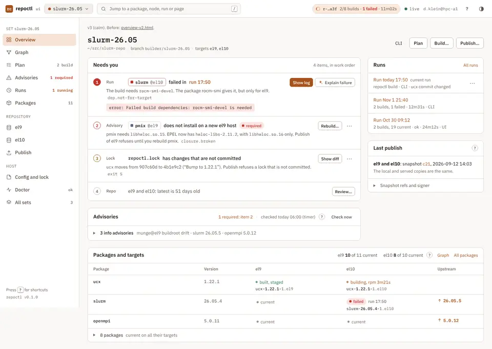
Rebuild…; the other actions are in ⋯ (R5).Build… in the page head is an outline button. The one filled button is on item 1 (R5).Publish… is gone (R4, R7).status, advisories and runs (R10).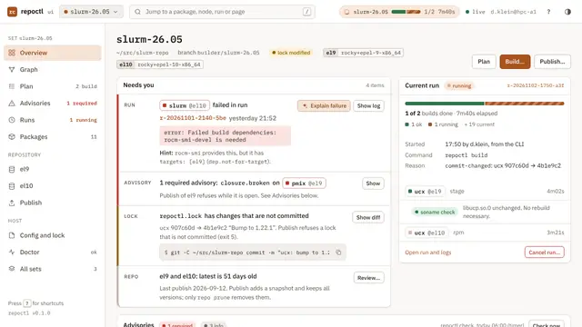
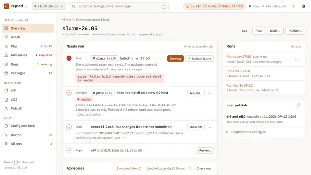
v2 → v3: pills 40 → 2 · filled primary 3 → 1 · agent-panel → agent-panel-v3
v2 → v3: height 1863 → 1262 · pills 26 → 6 · filled primary 0 → 1 · run-detail → run-detail-v3
Retry failed is in ⋯, disabled with its reason (R5).Open in terminal and the CLI commands go in one CLI toggle. Cancel run… is an outline button (R10, R11).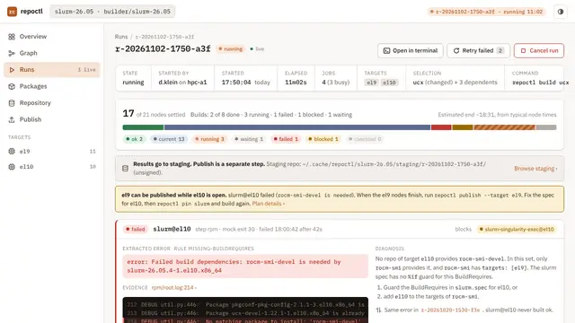
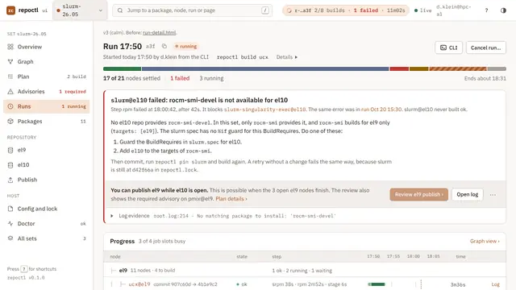
v2 → v3: height 1448 → 1107 · pills 17 → 5 · runs → runs-v3
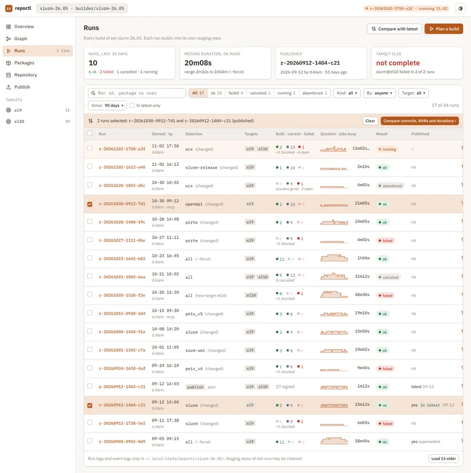
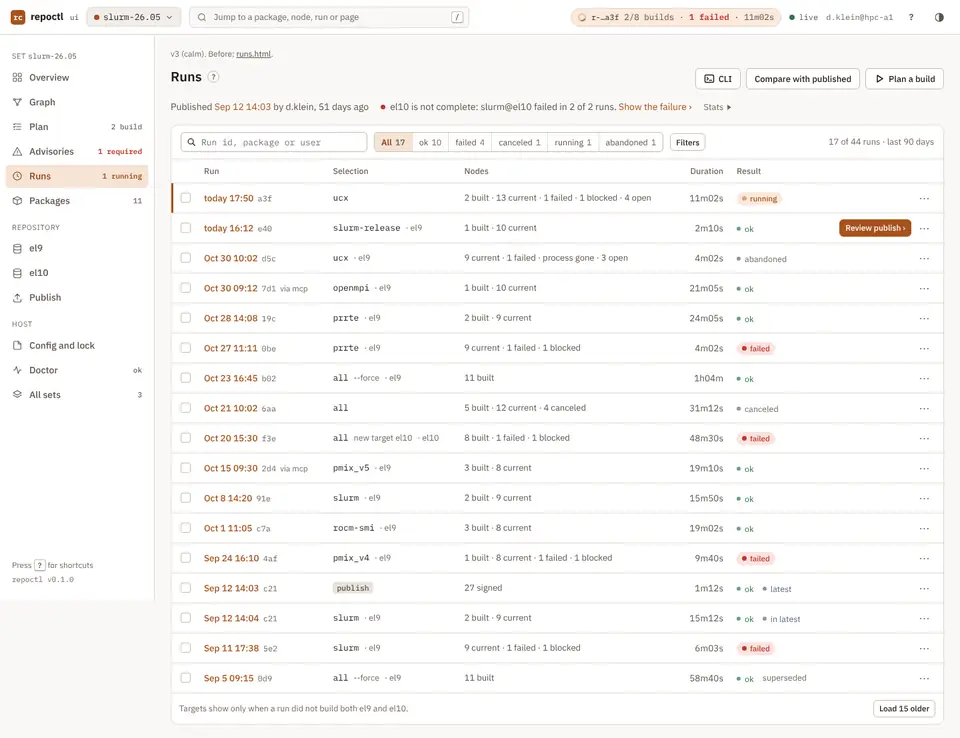
v2 → v3: height 1761 → 1078 · pills 13 → 1 · publish-v2-review → publish-v3-review
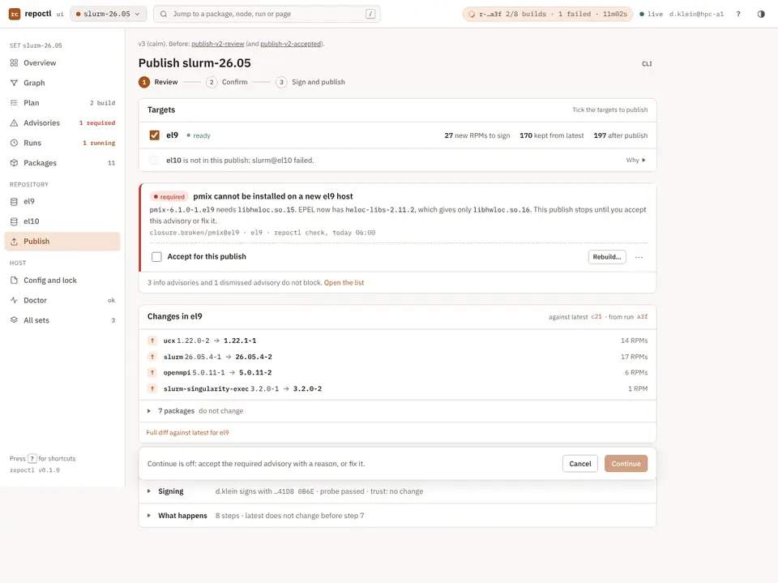
Accept for this publish box come right after the targets. It is the only red item on the page (R11).Re-sign 0, and the "0 removed" row with its red icon (R3). A removed package, when there is one, is a named row in warn colour.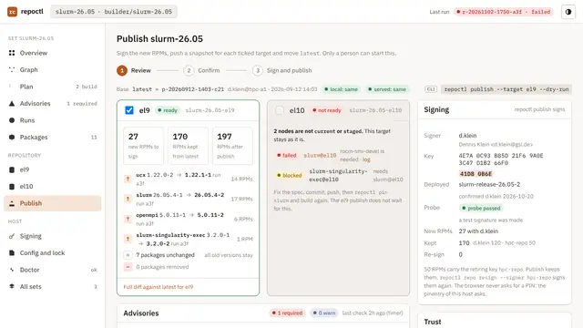
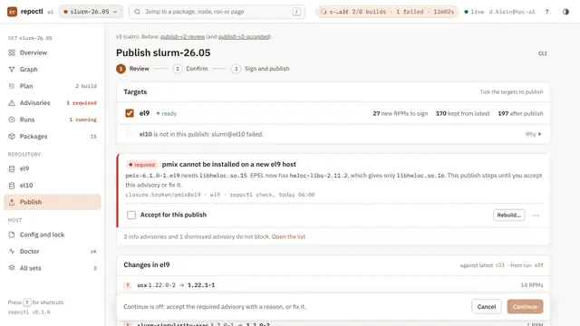
v2 → v3: height 2447 → 1122 · pills 7 → 0 · repo-published → repo-published-v3
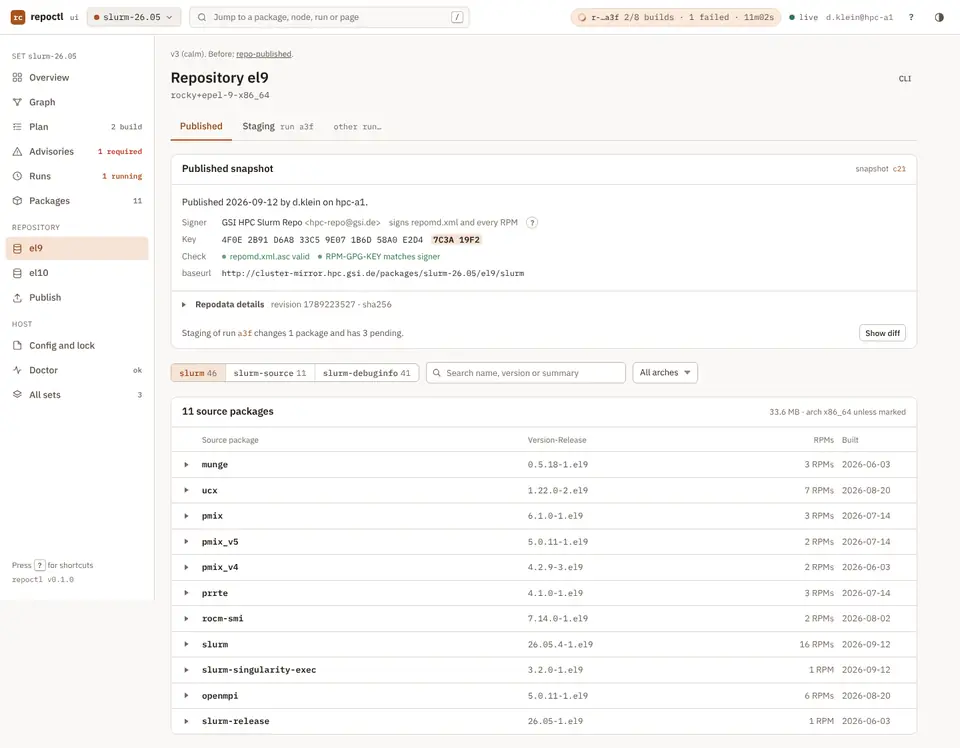
0: and .x86_64 on each row. Only noarch shows (R4).repoctl status33 → 16 lines · term-01-status → term-01-status-v3
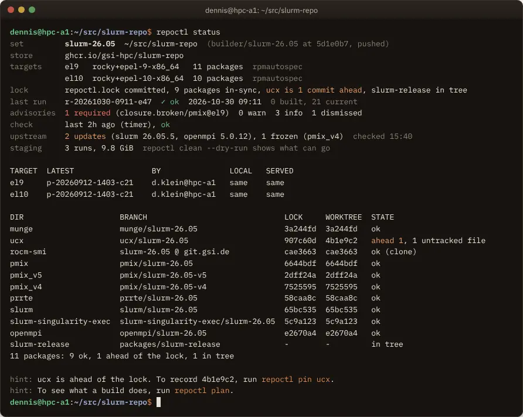
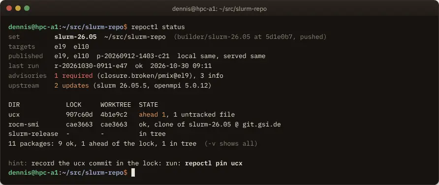
published line, because both targets have the same snapshot. The table comes back when they differ.-v shows the store, mock config, check and staging lines, and the 9 DIR rows that are ok on the default branch. The totals line stays, so "all fine" and "skipped" do not look the same.To see what a build does, run repoctl plan. It goes to repoctl help. The hint uses the 04 form hint: … run: CMD.28 → 20 lines · term-06-build-summary → term-06-build-summary-v3
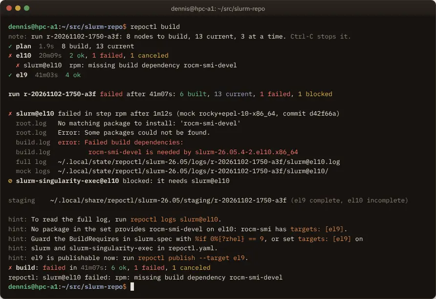
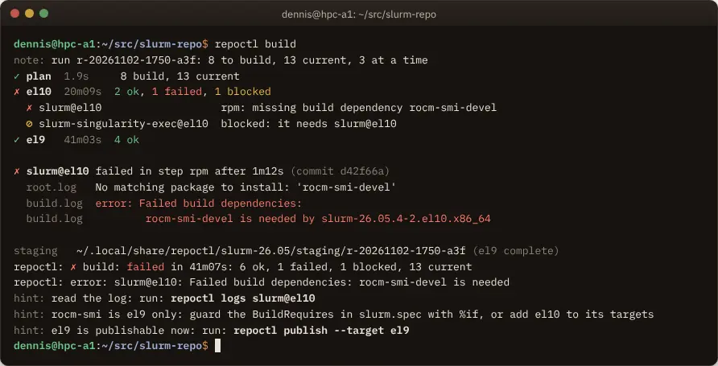
ok/built, canceled/blocked); v3 uses ok and blocked only.Error: Some packages could not be found. (it adds nothing) and the hint that repeats the diagnosis. The two log paths go behind repoctl logs.The reviewers gave these items as risks. A calm page must keep them visible. The v3 pages keep all of them.
These pages do not have a v3 mockup. The proposals come from the persona notes and use the same rules. Most are small.
| Screen | Mean | Proposals |
|---|---|---|
ui-pkg/publish-v2-accepted | 4.5 | As Publish review v3. After Accept: the pill becomes accepted in warn colour; Rebuild…, Show closure and the agent button go in ⋯; Continue goes on. An HTML comment in publish-v3-review.html gives the changes. |
ui-graph/plan-v2, plan-v2-staged | 4.0 | Fold the agent answer to its verdict line (R7). Drop 0 REQUIRED, 0 WARN, 0 staged, 0 skip (R3). Short hashes; the full lock diff behind "Show lock diff ▸". Put force, fail-fast and Jobs in an Options fold. Say "soname check pending" once. Staged: the run id once in the strip, not on each row (R4). Fold advisories that do not touch the staged packages, but keep their count. |
ui-pkg/package-slurm, package-ucx | 4.0 | Turn the lock banner into a step list: 1 commit · 2 pin · 3 build; the step that is possible is the primary (R5). Show hashes only when they differ. Drop the epoch. Fold Subpackages ("+10 off by %bcond"), Spec facts (show only the rows that do not match), Agent skills and Notes (R2, R7). On ucx, add the missing link to its soname.removed advisory. One CLI toggle (R10). Shell R1. |
ui-graph/rebuild-dialog | 3.5 | Give the dialog a max height with a body that scrolls, so the title and Make 2 commits stay on screen at 720 px. Replace the "What happens" items and the push banner with "After this: 1 commit repoctl.lock · 2 push pmix, prrte · 3 Start build on Plan ›". Fold the changelog preview; show the author once. |
ui-graph/graph-el9-v2 | 3.3 | Make the banner one line with "Why ▸". Drop the run strip (R1). No current pill on nodes; drop "published · rel 1" (it is in the drawer). Show "no rebuild needed" as an icon with a tooltip. Legend behind "?"; Export DOT in ⋯. |
ui-pkg/packages | 3.3 | Quiet text for an upstream that is the same; pills for ↑ available and frozen only. Show the source branch and the pinned hash only on rows that are not clean. Show targets only when they are not all targets. Give the "2 packages differ" banner an action. Shell R1. |
ui-run/node-log-failed, node-log-live | 3.2 / 3.0 | Close Key inputs by default and show only the rows marked new, changed or no node. Drop the "Follow behaviour" card; use a tooltip on Follow. The SSE id goes to a tooltip. Fold "Mock result directory". Wrap at spaces, not anywhere. Shell R1. |
ui-pkg/publish-v2-blocked | 2.8 | The refusal shows 4 times; keep the two target cards with their fix lines (as links) and drop the Continue side card. The terminal output goes in a fold. |
ui-pkg/publish-v2-failed | 2.5 | Put Recover right under the banner. Steps 1–5 are one line, "Steps 1–5 ok (49 s) ▸". Drop the Signing card and the CLI chip, which reads like the recovery command. |
ui-pkg/signing | 2.7 | Plain text for active, yes and you; colour only for retiring, no record and expiry within 30 days. Fold the Rules card. Onboarding: "3 of 5 done ▸" with the open step visible. Keep the fingerprints. |
ui-pkg/publish-v2-confirm | 2.4 | Remove the CLI chip from the footer (it overflows the dialog). Make the retiring-key text and the registry path quieter. Make the page behind the dialog inert. Keep all five bullets. |
ui-shell/agent-off | 2.2 | Keep. It is the calmest version of the advisory card. Keep a plain-language line in the Needs you run item when there is no agent. |
ui-pkg/publish-v2-progress, publish-v2-done | 2.0 / 1.8 | Neutral run chip (R11). Progress: no bar for waiting steps; the signer in one header line. Done: the RPM counts and the snapshot id once; the served: behind pill links to Hosts. |
ui-run/run-success | 2.0 | Merge the 4 tiles into the header line. Fold "Checks for publish" to one line that opens on a failure. Do not uppercase the snapshot id. Shell R1. |
ui-shell/sets, session | 2.0 / 1.0 | Sets: the node dot strip to a tooltip; Remove from list in ⋯; the host card as one line with a fold. Session: keep. |
cli-term/term-02-plan | 4 | Fold current rows to one line per target ("7 current: munge rocm-smi …"); -v shows all. Merge rows with the same action and reason on all targets. current without colour. Put the rocm-smi warning next to the slurm@el10 row. Drop the tutorial hint. |
cli-term/term-05-build-plain | 4 | Write a heartbeat only when a count changes, and one keep-alive each 60 s. The 10 s per-target lines go behind -v. |
cli-term/term-08-publish | 4 | Move TARGET and FROM RUN to the header line. Merge inputs and trust into the checks line. After success, fold the 8 steps to one line. Move the retiring-key note to doctor and status. |
cli-term/term-03, 07, 09, 10, 12 | 3 | graph: the edge legend to repoctl help graph. logs: 5 lines of context, not 20; fold mock INFO: lines. upstream: fold up-to-date rows; drop github. doctor: ✓ lines faint; each fix under its ! line. checkout: fold created rows; drop WORKTREE when it is the default. |
These are not density problems, but the reviewers read them as noise: they stop to match ids that do not agree.
p-20260912-1403-c21, p-20260912-1431-4c2, r-20260912-1404-c21, r-20260912-1405-e19. The v3 pages use p-20260912-1403-c21 for both targets.closure.broken/pmix@el9 blocks the el9 publish; Publish review v2 shows soname.removed/ucx@el9, which Plan calls info. Publish review v3 uses the Overview advisory. The 04 text examples stay as they are.0 REQUIRED.~/.cache/… in Run detail v2, ~/.local/share/… in 04 and the terminal. v3 uses the 04 path.run.css and pkg.css carry their own shell rules, which override shell.css (.icon-btn, .jump, tr.live against .live). .btn-agent has three styles in three files. The v3 pages work around this in their own CSS files.--c-text-3 change from calm-v3.css into repoctl-base.css.Rebuild… as primary on a required advisory? 04 makes Rebuild… primary on a required advisory. R5 allows one primary per page, so Overview v3 makes the failed node's action primary and Rebuild… secondary. Proposal: R5 wins; 04 says "primary in its row".-v. Scripts use --json, so the change does not break them. Proposal: accept, and add "exceptions plus a totals line" to the output rules of 04 §9.| File | Content |
|---|---|
docs/design/mockups/shared/calm-v3.css | The shared classes for R1 to R13: .qs, .rest, details.fold, .help, .more, .code-sub, .cli-toggle, the quiet agent button, the darker --c-text-3. |
ui-shell/overview-v3.html, agent-panel-v3.html, overview-v3.css | Overview and the agent drawer. |
ui-run/run-detail-v3.html, runs-v3.html, run-v3.css | Run detail and Runs. |
ui-pkg/publish-v3-review.html, repo-published-v3.html, pkg-v3.css | Publish review and Repository el9. |
cli-term/term-01-status-v3.html, term-06-build-summary-v3.html | Terminal frames. |
docs/review/density-personas.html | The seven persona notes, as written: per-screen scores, first five seconds, noise, proposals and risks. |
docs/review/img/density-*.webp | The screenshots of this review. |
Screenshots: light mode, 1440 px wide, full page, deviceScaleFactor 1. The v3 pages also work in dark mode.